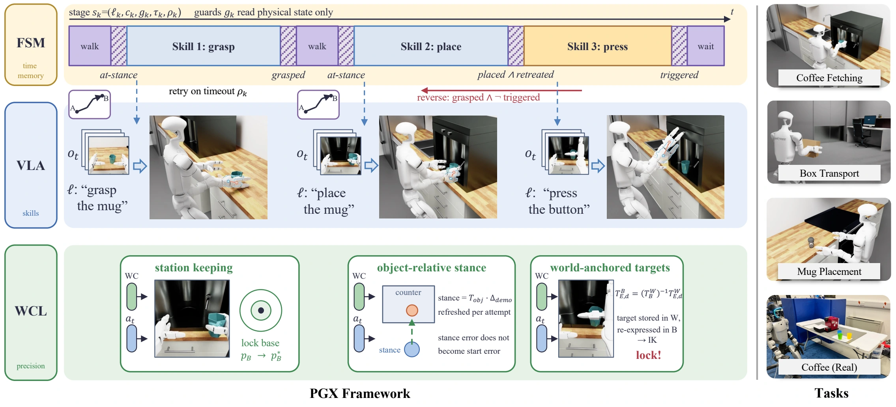
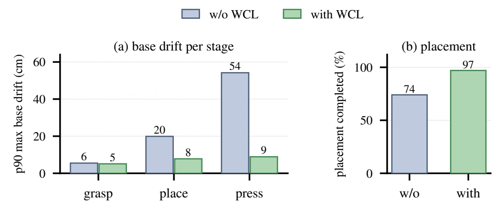
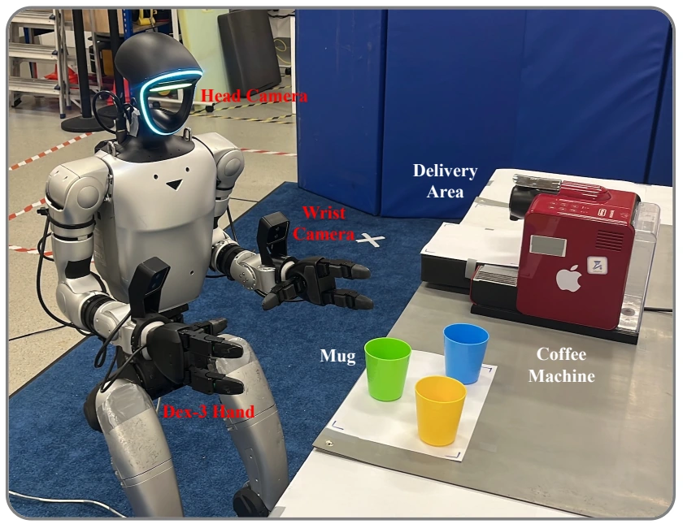
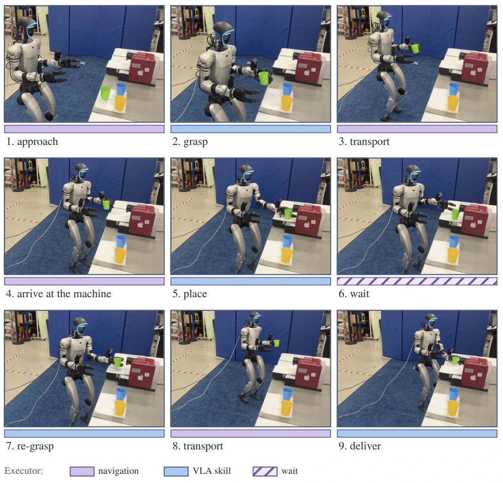
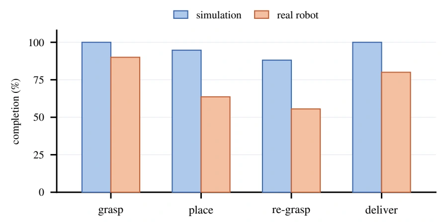
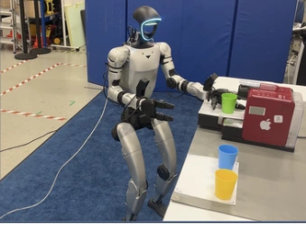
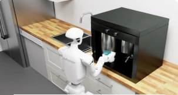
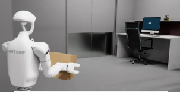
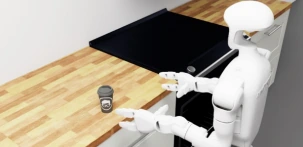

01 Timing
Predicate-gated state machine
Enter the next stage when its physical guard is satisfied. Timeouts trigger retries, while reverse transitions recover from premature progression. Navigation and waiting are handled by the executor.
ICRA 2027 · Anonymous submission
A structured execution framework combining predicate-based task progression,
vision-language-action skills, and world-frame spatial stabilization.
Vision-language-action (VLA) models can execute individual manipulation skills, but long-horizon humanoid loco-manipulation also requires reliable task progression and spatial precision. Physically Grounded Execution (PGX) separates these responsibilities into three layers: a predicate-based state machine controls transitions, recovery, navigation and waiting; the VLA executes skills within active manipulation stages; and world-coordinate locking (WCL) maintains spatial consistency through station keeping, object-relative positioning and world-anchored contact targets.
We evaluate PGX with π₀.₅ and GR00T N1.6 on three simulated tasks and a real Unitree G1 coffee task. On simulated coffee fetching, PGX improves GR00T task success from 35% to 80% with unchanged policy weights. The execution components are training-free; the manipulation policies are fine-tuned VLAs.
PGX assigns timing, skill execution and precision to complementary components. Physical predicates connect demonstration segmentation, online execution and stage-wise evaluation.

Predicate-gated state machine
Enter the next stage when its physical guard is satisfied. Timeouts trigger retries, while reverse transitions recover from premature progression. Navigation and waiting are handled by the executor.
Vision-language-action policy
Execute manipulation skills from an executor-prepared start state. PGX supports flat or stage-trained VLA skills; stage-wise training is optional and its effect is model-dependent.
World-coordinate locking
Compute object-relative stances, hold the base during manipulation, and anchor contact targets in the world frame. WCL-P uses a world-anchored primitive for fine button pressing.
Simulated coffee task: approach → grasp → transport → place → press → re-grasp → transport → deliver. The executor handles the wait between pressing and re-grasping.
Experiments use a Unitree G1 in Isaac Lab Arena, with at least 20 evaluation episodes per cell. We report end-to-end task success separately from intermediate stage progress.
The first two result columns below keep the VLA weights and task-level instruction fixed. The final column uses a stage-trained skill model. This comparison isolates the effect of the execution framework from that of skill training.
| Backbone / condition | Flat execution | PGX + flat skills | PGX + stage skills |
|---|---|---|---|
| π₀.₅ · C0 | 0 | 60 | 60 |
| π₀.₅ · C1 | 0 | 60 | 55 |
| GR00T N1.6 · C0 | 35 | 80 | 35 |
| GR00T N1.6 · C1 | 20 | 80 | 35 |
C0: nominal initial pose. C1: randomized initial pose. Stage-wise training is model-dependent; flat GR00T skills perform better on coffee fetching in this evaluation.
| Task | Backbone | Nominal · C0 | Random initial pose · C1 | ||
|---|---|---|---|---|---|
| Flat | PGX | Flat | PGX | ||
| Box transport | GR00T N1.6 | 55 | 75 | 20 | 45 |
| π₀.₅ | 10 | 90 | 5 | 60 | |
| Mug placement | GR00T N1.6 | 15 | 65 | 5 | 70 |
| π₀.₅ | 0 | 75 | 0 | 90 | |
| Coffee fetching | GR00T N1.6 | 35 | 80 | 20 | 80 |
| π₀.₅ | 0 | 60 | 0 | 55 | |
C1 adds uniform offsets of ±0.30 m in both translation axes and ±30° yaw. Time budgets are 40 s, 60 s and 110 s for box, mug and coffee, respectively. PGX uses stage-trained skills for box and mug; coffee uses stage-trained π₀.₅ and flat-trained GR00T. These comparisons do not all hold policy weights fixed.
Under sustained base disturbance, WCL reduces press-stage p90 maximum base drift from 54 cm to 9 cm. Completed placement attempts increase from 74% to 97%.
In a separate evaluation without sustained disturbance, WCL-P completes 243 of 245 button-stage entries across 14 runs. This measures completion conditional on reaching the button stage.

PGX is deployed on a Unitree G1 with Dex-3 hands. The VLA is fine-tuned on 44 real demonstrations; motion capture and joint states supply physical predicates. Simulation and real-world policies are trained separately.


The robot approaches the counter, grasps the mug, transports and places it at the machine, waits, re-grasps it and delivers it. The gap between simulation and hardware is concentrated at placement and re-grasping.
The real-robot task does not evaluate button pressing. The plot reports completion by stage, rather than an aggregate end-to-end success rate.

Simulation and real-robot tasks. Videos will be added here; the images below are stills from the paper.

Video forthcomingReal robot
Navigate, place, wait, re-grasp and deliver.

Video forthcomingSimulation
Multi-stage manipulation with coffee-machine interaction.

Video forthcomingSimulation
Bimanual pick-up, transport and delivery.

Video forthcomingSimulation
Single-hand transfer to a target region.
PGX relies on task-specific stage definitions and physical state estimates. Stage transitions add execution time. Extending the framework to richer skills and tasks, while reducing transition overhead, remains future work.